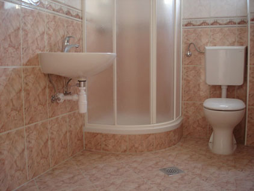
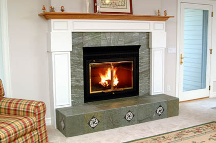

Keramika
Čolig | Postavljanje podnih i zidnih obloga
Početna
Usluge
Gdje smo?
Kontakt
Usluge
Postavljanje svih vrsta podnih i zidnih pločica
Pločenje bazena
Radovi s klinker pločicama
Radovi s betonsko-kulirnim pločama
Izrada i oblaganje kamina
Postavljanje granitnih stepenica

Kupaonice
Postavljanje svih vrsta podnih i zidnih pločica
Bazeni
Pločenje bazena
Interijer
Radovi s klinker pločicama
Eksterijer
Radovi s betonsko-kulirnim pločama

Kamin
Izrada i oblaganje kamina
Stepenice
Postavljanje granitnih stepenica